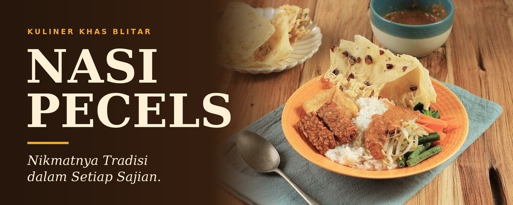

NASI PECELS – Cita Rasa Tradisional Kuliner Khas Blitar
Nikmatnya Tradisi dalam Setiap Sajian.
Selamat Datang
NASI PECELS adalah usaha kuliner yang menyajikan nasi pecel khas Blitar. Situs ini memuat menu, bahan, proses pembuatan, dan cara menghubungi kami.

Mengenal Nasi Pecel
Nasi pecel adalah hidangan khas Jawa Timur: nasi putih, sayuran rebus, dan sambal berbahan dasar kacang tanah. Pecel Blitar dikenal pedas dan beraroma kencur.
Gambaran Singkat Usaha
Dikelola Ibu Sri Wahyuni di Jalan Kenanga Raya Nomor 17, Kota Blitar, Jawa Timur. Menu utamanya nasi pecel, dengan pilihan lauk dan minuman.
Ringkasan Menu Unggulan
Pecel original dapat ditambah lauk telur, lele, ayam, atau rempela, serta minuman teh, jeruk, atau kopi. Harga ada di halaman Menu.
Keunggulan Produk
Sambalnya dibuat dari kacang tanah, cabai, gula merah, kencur, bawang putih, daun jeruk, dan garam, sehingga terasa gurih, manis, pedas, dan harum.
Layanan bungkus tersedia, dan layanan antar tersedia untuk wilayah Kota Blitar lewat WhatsApp.